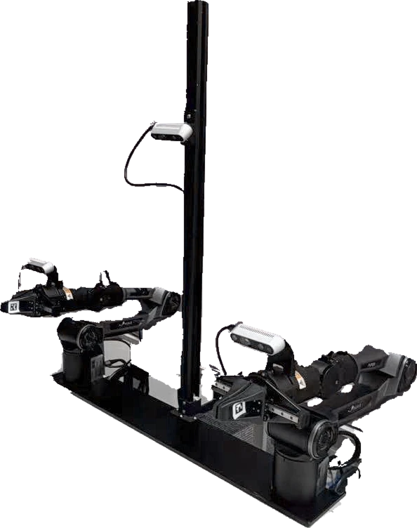

Piper OpenPI · RTC & TE
开源项目
模型算下一段时，机器人怎样动？
JAX 服务端加载策略，Piper 客户端发送观测并执行双臂动作。相邻两次推理的计划可能在交接处不连续，这个项目实现了两种执行方式。
| 方式 | 执行逻辑 |
|---|---|
| RTC | 保留上一段计划，按时间约束衔接下一段轨迹。 |
| Temporal Ensemble | 把同一控制时刻的重叠预测对齐后加权平均。 |

开源项目
JAX 服务端加载策略，Piper 客户端发送观测并执行双臂动作。相邻两次推理的计划可能在交接处不连续，这个项目实现了两种执行方式。
| 方式 | 执行逻辑 |
|---|---|
| RTC | 保留上一段计划，按时间约束衔接下一段轨迹。 |
| Temporal Ensemble | 把同一控制时刻的重叠预测对齐后加权平均。 |
